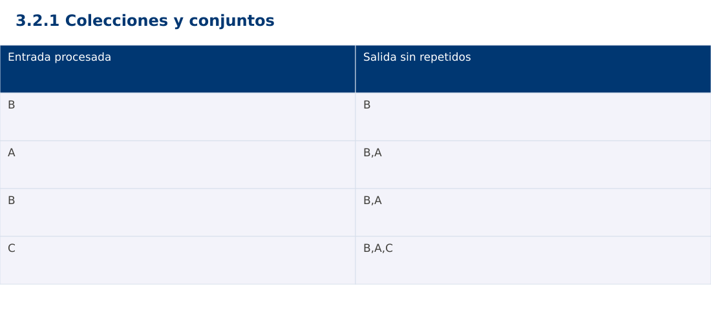

Estructura de Datos
3.2.1 Colecciones y conjuntos · Java
Ing. Pablo Torres, Mgtr. · Universidad Politécnica Salesiana · Computación · Cuenca
Unidad 3: Estructura de Datos y Grafos
Índice del curso · Presentación Java · Evaluación Moodle
1. Conceptos y ejemplos
Prerrequisitos: variables, condiciones, bucles, funciones y arreglos. Revisa las estructuras lineales antes de este contenido.
1.1 Interfaces y significado
Una colección agrupa elementos y ofrece operaciones de consulta y modificación. Una lista preserva una secuencia y permite repetidos. Un conjunto representa pertenencia sin duplicados. Un mapa asocia claves y valores y se estudia en el siguiente tema. En Java Map no hereda de Collection, aunque forma parte del framework de colecciones. Elegir una estructura empieza por las operaciones que necesita el problema.
1.2 Igualdad y unicidad
El criterio de igualdad determina qué valores se consideran duplicados. Java combina equals y hashCode en conjuntos hash; objetos iguales deben tener el mismo hash. Python exige claves hashables y coherencia entre igualdad y hash. JavaScript Set compara primitivas por SameValueZero y objetos por identidad. Dos objetos distintos con campos iguales no se deduplican automáticamente en JavaScript.
1.3 Orden de iteración
Un HashSet de Java no garantiza orden. LinkedHashSet conserva el orden de inserción. El set de Python tampoco promete una secuencia para la salida; si el contrato requiere orden hay que construirla explícitamente. JavaScript Set mantiene inserción. La demostración usa lista de salida más conjunto de vistos para conservar la primera aparición de cada código de forma equivalente.
1.4 Costo y operaciones de conjuntos
En estructuras hash habituales, pertenencia e inserción tienen costo esperado constante bajo buena dispersión, pero no una garantía universal. La deduplicación esperada cuesta Θ(n) y reserva Θ(u) memoria para u códigos únicos, además de la salida. Unión reúne valores; intersección conserva los presentes en ambos; diferencia conserva los del primero ausentes en el segundo. Mutar mientras se itera puede invalidar el recorrido o producir resultados difíciles de razonar.
Traza de referencia
| Entrada procesada | Salida sin repetidos |
|---|---|
| B | B |
| A | B,A |
| B | B,A |
| C | B,A,C |
La tabla muestra estados o conteos concretos. Reproduce cada transición y comprueba qué propiedad permanece verdadera. Una traza finita ayuda a encontrar errores; la justificación del algoritmo también exige explicar por qué progresa y por qué la condición final satisface el contrato.

Particularidades de Java
Java usa tipos estáticos y comprobación de tipos en compilación. int y long tienen rango fijo; los cálculos deben promoverse antes de una multiplicación que pudiera desbordar. Las referencias permiten compartir objetos y la copia de un arreglo de objetos es superficial. Las excepciones de los contratos se comprueban explícitamente. No se necesita Maven ni Gradle: el modo de archivo fuente ejecuta Demo.java con un JDK instalado.
2. Demostración guiada
Problema y contrato: Secuencia de códigos de texto no nulos. Devuelve una nueva lista de valores únicos conservando la primera aparición. No modifica la entrada.
- Lee el contrato y predice la salida del caso principal antes de ejecutar.
- Identifica las variables que representan el estado y vincúlalas con la traza de la sección anterior.
- Ejecuta el archivo completo. Las comprobaciones internas detienen el programa si una condición esperada falla.
- Cambia una entrada del bloque de ejecución, predice el resultado y contrástalo. Conserva el núcleo de la demostración como referencia.
Código completo
Este bloque se genera desde ejemplos/Demo.java mediante scripts/sync-code.py; ese archivo es la fuente del código. La PC tiene otro objetivo y sus casos de aceptación aparecen en la sección 3.
import java.util.*;
public class Demo {
static void check(boolean ok) {
if (!ok) throw new AssertionError("Verificación fallida");
}
static List<String> unique(List<String> input) {
Set<String> seen=new HashSet<>(); List<String> out=new ArrayList<>();
for (String value:input) if (seen.add(value)) out.add(value);
return out;
}
public static void main(String[] args) {
List<String> out=unique(Arrays.asList("B","A","B","C","A"));
check(out.equals(Arrays.asList("B","A","C")));
check(unique(Collections.emptyList()).isEmpty());
System.out.println(String.join(",",out));
}
}
Ejecución
Desde esta carpeta 03-data-structures/3.2.1-collections/java:
java ejemplos/Demo.java
Salida esperada de la demostración
B,A,C
La salida procede de los datos fijos del bloque de ejecución. Las verificaciones internas también cubren los casos adicionales que se leen en el código. El registro de ejecuciones realizadas se conserva en verificación, separado de estas expectativas.
3. PC — 3.2.1: Colecciones y conjuntos
Calcula inscritos comunes, exclusivos y unión de dos cursos. La salida debe seguir el orden de primera aparición: para la unión, primero los del curso A y luego los nuevos del B. Documenta igualdad por código.
Requisitos de la entrega
- Implementa la actividad en una versión, a tu elección entre Java, Python y JavaScript. Las PL se entregan exclusivamente en Java.
- Separa la lógica del procesamiento de la entrada y la impresión. Documenta tipos, dominio válido, salida y comportamiento de error.
- Conserva los casos de aceptación siguientes y agrega al menos un caso que compruebe el invariante del tema.
- No copies como solución el bloque de demostración: resuelve la ampliación pedida. No se suministra una solución completa de esta PC.
Casos de aceptación de la PC
| Entrada o escenario | Resultado exigido |
|---|---|
| A=[P,Q,P], B=[Q,R] | intersección [Q]; unión [P,Q,R] |
| A=[], B=[R] | intersección []; unión [R] |
| A=[P], B=[P] | exclusivos vacíos |
Ejecución y evidencia
Desde la carpeta de tu entrega, ejecuta el programa con java Main.java. Si divides Java en paquetes, utiliza los comandos de la plantilla del estudiante. Registra entrada, resultado esperado, resultado real y explicación de cualquier diferencia en evidencias/PC3.2.1.md de tu repositorio personal.
Crea commits pequeños: feat(pc3.2.1): implementar contrato, test(pc3.2.1): cubrir casos limite y docs(pc3.2.1): explicar costos. Sustituye los mensajes por descripciones del cambio real. Obtén el hash con git rev-parse HEAD y revisa una etapa con git show HASH. La actividad no necesita continuar un proyecto acumulativo.
Lo esencial
- Una colección agrupa elementos y ofrece operaciones de consulta y modificación.
- En estructuras hash habituales, pertenencia e inserción tienen costo esperado constante bajo buena dispersión, pero no una garantía universal.
- Explica el contrato, traza una entrada y justifica tiempo y memoria con las condiciones descritas.
Referencias
- Programa analítico y referencias del docente: correspondencia en el documento docente de este contenido.
- Referencia técnica de Java.
- Bibliografía y análisis de fuentes.